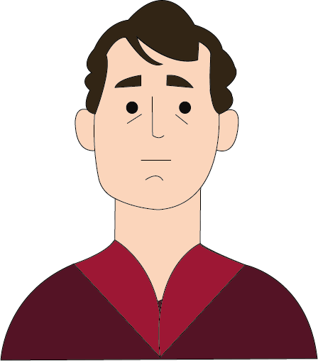

Jacques-Louis David


Nascita:
30 Agosto 1748, Parigi, Francia
Morte:
29 Dicembre 1825, Regione di Bruxelles-Capitale, Belgio
Corrente:
Neoclassicismo



Opere più famose: Il giuramento degli Orazi 1784; La morte di Marat 1793
Curiosità: Pochi sanno che David aveva una deformità facciale, dovuta a un colpo di spada subito in gioventù. Per l’artista era difficile parlare in pubblico o compiere movimenti. Questo particolare non è molto noto, ma è possibile riscontrarlo osservando il suo “Autoritratto” (1794).
Citazione: “Dare un corpo e una forma perfetta ad un pensiero. Questo – e solo questo – è essere un artista.”